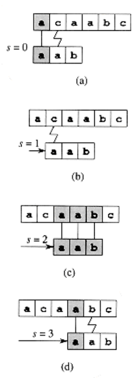

The naive algorithm finds all valid shifts using a loop that checks the condition P[1 . . m] = T[s + 1 . . s + m] for each of the n - m + 1 possible values of s.
NAIVE-STRING-MATCHER(T, P)
1. n length[T]
2. m length[P]
3. for s 0 to n - m
4. do if P[1 . . m] = T[s + 1 . . s + m]
5. then print "Pattern occurs with shift" s

The operation of the naive string matcher for the pattern P = aab and the text T = acaabc. We can imagine the pattern P as a "template" that we slide next to the text. Parts (a)-(d) show the four successive alignments tried by the naive string matcher. In each part, vertical lines connect corresponding regions found to match (shown shaded), and a jagged line connects the first mismatched character found, if any. One occurrence of the pattern is found, at shift s = 2, shown in part (c).
The naive string-matching procedure can be interpreted graphically as sliding a "template" containing the pattern over the text, noting for which shifts all of the characters on the template equal the corresponding characters in the text.
The for loop beginning on line 3 considers each possible shift explicitly.
The test on line 4 determines whether the current shift is valid or not; this test involves an implicit loop to check corresponding character positions until all positions match successfully or a mismatch is found.
Line 5 prints out each valid shift s.
As we shall see, NAIVE-STRING-MATCHER is not an optimal procedure for this problem.
Indeed, we shall show an algorithm with a worst-case running time of O(n + m).
The naive string-matcher is inefficient because information gained about the text for one value of s is totally ignored in considering other values of s.
Such information can be very valuable, however. For example, if P = aaab and we find that s = 0 is valid, then none of the shifts 1, 2, or 3 are valid, since T[4] = b.